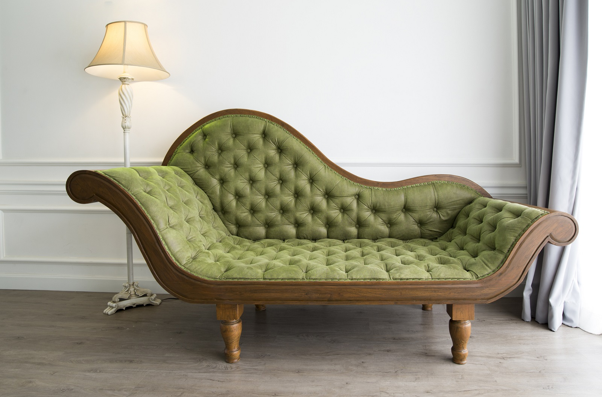

Usługi tapicerskie - Zbyszek
Witamy na naszej stronie gdzie zadbamy o twoją skórę..
i nie tylko!
Tapicerstwo meblowe wnosi nowe życie w stare, zniszczone meble, które posiadają duszę.
Wie o tym niejeden tapicer meblowy – szczególnie ten z kilkudziesięcioletnim doświadczeniem.
Meble bardzo często niosą ze sobą dużo większą wartość, niż to na ile można je wycenić.
Są nośnikami wspomnień o bliskich nam osobach, wydarzeniach.
Dlatego tak trudno jest się nam ich pozbyć, kiedy się popsują.
Z nami, jako osobami zlecającymi pracę, powinno zostać ustalone również to, jakie rzemieślnik ma zastosować
materiały do wykonania renowacji. Jest to ważna kwestia ze względu na ich różne właściwości. To my powinniśmy
ostatecznie zadecydować czy życzymy sobie skóry naturalnej, czy sztucznej; czy zależy nam na komforcie użytkowania
i chcielibyśmy, aby obicie zostało zrobione z materiału, który się łatwo czyści, czy też większe znaczenie ma dla
nas klasyczny wydźwięk obicia. Te elementy będą różnicowały ostateczną cenę usługi tapicerskiej, dlatego trzeba
się w tej sprawie porozumieć już na początku zlecenia.